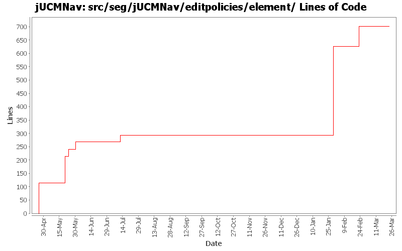

Summary Period: 2005-04-25 to 2006-03-23
[root]/src/seg/jUCMNav/editpolicies/element

Total Lines Of Code:
701 (2006-03-31 18:01)
| Author | Changes | Lines of Code | Lines per Change |
|---|---|---|---|
| Totals | 72 (100.0%) | 701 (100.0%) | 9.7 |
| jfroy | 22 (30.6%) | 408 (58.2%) | 18.5 |
| jkealey | 40 (55.6%) | 178 (25.4%) | 4.4 |
| etremblay | 6 (8.3%) | 115 (16.4%) | 19.1 |
| jpdaigle | 1 (1.4%) | 0 (0.0%) | 0.0 |
| jmcmanus | 3 (4.2%) | 0 (0.0%) | 0.0 |
Created command test cases for GRL
Fixed bug when saving Evaluation and LinkRef
0 lines of code changed in:
bug 420: LinkRef bendpoint not correctly positioned when zoomed
0 lines of code changed in:
Ended name change.
39 lines of code changed in:
Name change for EvaluationScenario (now called Strategy)
36 lines of code changed in:
Added:
-Delete commands for scenario and evaluation
-Delete action for evaluation
Fixed:
-NullPointer exception with scenarioView (in property view)
-Adding new elements in model when in scenario view
-Contribution and decomposition refresh
-Dispose labels in IntentionalElementEditPart and LinkRefEditPart
0 lines of code changed in:
Evaluation scenario view added.
0 lines of code changed in:
Merge of GRL branch with the main trunk
333 lines of code changed in:
Merge grl branch with the main trunk
Major modification of the metamodel (URN_08.mdl) (Added GRL metamodel, New interfaces that define common element in GRL and UCM, Modified UCM-Map package to implement the new interfaces (some associations and attributes have been refactored using the interfaces), Map is now called UCMmap (to resolve conflict with java.util.map in the implementation), Removed Path Graph)
Modification of the code that used the metamodel.
Started modification of jUCMNav to support GRL.
0 lines of code changed in:
bugs 372 - 378 - 380 - 379 - 273 - 375 - massive changes in deletion command infrastructure. mainly refactoring but also various functionality additions
also committing minor changes to the twiki plugin created by JFRoy and an ant script to generate javadoc on a windows machine.
0 lines of code changed in:
fixed a few javadoc issues
0 lines of code changed in:
bug 344 - localization wizard
0 lines of code changed in:
Cleaned/commented seg.jUCMNav.model.commands.delete, except for most of the hard ones: DeleteMultiNodeCommand, DeletePathCommand, DeletePluginCommand, DeleteStartNCEndCommand;
Created new command tests.
Added headers in seg.jUMCNav.tests.*
0 lines of code changed in:
bug 359 - had forgotten to set new maps to current mode;
fixed bugs in ET's resp view that sometimes made the app crash
fixed a few javadoc tags
0 lines of code changed in:
new feature: use pathtool/fork/join from palette on fork/join and a new branch will be added.
fixed a bug introduced during cleanup in LabelEditPart.
cleaned up seg.jUCMNav.editpolicies.* and wrote javadoc
25 lines of code changed in:
1 line somehow got deleted on version 1.13, Fri Jun 17 16:57:12 2005 UTC
0 lines of code changed in:
bug 340 - disconnect timeout path action.
0 lines of code changed in:
bug 320 - more loop+deletion faux pas
0 lines of code changed in:
bug 191 - connects -> improvements in deletion. i think there remains a bug where you do something, then undo it, then select a timer and the app causes an error because the connect path isn't the 2nd input, its the 1st. unable to repro but asking for testing.
0 lines of code changed in:
bug 191 - connections; initial work implemented. a few bugs remain but are not critical; mostly delete issues concerning delete multinode which I want refactored anyways. todo: improve usability with drag & drop connections and element position
0 lines of code changed in:
Delete of PluginBindings/InBinding/OutBinding are now done using Compounds commands. This improve code reuse a lot.
0 lines of code changed in:
(19 more)
Generated by StatCVS 0.2.4